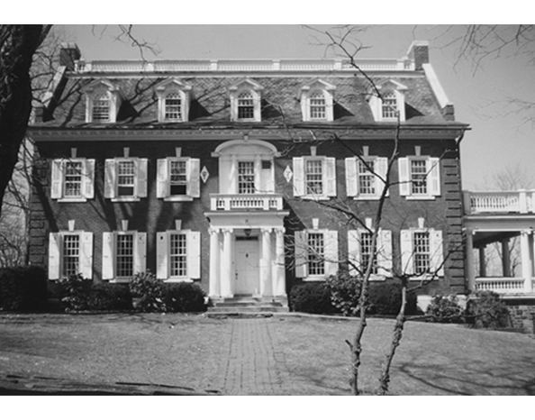

Chapter 19 on the roll
The Eta


- Position on the roll#19
- InstitutionLehigh University
- Chartered1884
- StatusActive since 1884
- Coat of armsfull-size PDF
Notable brothers of the Eta
In the archive
Pages that name the Eta Chapter or its institution.
Named on 806 pages across 332 volumes of the archive.
…nd General Resolution No. 4 passed. The foUowing petition for a Chapter at Lehigh University, Bethlehem, Pa. , with accompanying documents was laid before the convention by the chair and referred to the Committee on New Business.
…ves tigate the advisability of establishing a Chapter of the Fraternity at Lehigh University ; the following com mittee; Eobert T. Jones, (Gamma 1863.) Eev. J. 0. Middleton, (Beta 1859.) A. P. Jacobs, (Phi 1873.) W. D. Holmes, (Chi 1881.) H.…
Page12…o. 3.� Resolved, &c.. That the petiton for a Chapter of this Fraternity at Lehigh University be granted and referred to the Chapters for their con sideration. Resolved, &c., I. That the Executive Council be authorized to pubMsh a supplementar…
…r hearing the report of the committees, to decide upon the fit ness of The Lehigh University and the University of Pennsylvania to receive chapters of our fraternity. I put the Lehigh institution first as, but for the arrival of its petition…
…it. We can not tell how they wiU vote on the admission of a new Chapter at Lehigh University. The picture of the Moravian Female Seminary, sent us by the petition ers, will, undoubtedly, influence them greatly. Pm. � "The value of life is the…
Page14…nt. Eesolved. &c.. That the petition for the establishment of a Chapter at Lehigh University be and hereby is granted. Resolved, &o.. That a tax of one doUar per capita be assessed upon the different Chapters. Resolved, <fec.. That the work o…
Page12…engaged in practicing law at Pottsville, Pa. His son has just entered the Lehigh University, and is a member of the Phi Theta Psi Society. '80. Benj. H. Ripton is meeting with just success as Principal of Whitestown Seminary, Utica, N. Y. De…
Page11…en. 2. The Eta Chaptee.�The petition for the establishment of a Chapter at Lehigh University, Bethlehem, Pennsylvania, having been granted by unan imous vote of the Chapters, the new Chapter was installed at Bethlehem on February 22, 1884, wi…
Page12…eGustibus Non Est Dlsputandum..... 38 Miscellany : The Installation of the Eta Chapter.', 39 Convention of ISS* ....;� '..., 43 Book Reviews , 4.3 Alumni Notes.. 49 Our Chapters. �� 50 Personals 52 Br�adow & Barton, Printers, 53 N. Pe�r…
Page16…e publish a full account of the pubhc exercises at the installation of the Eta Chapter. In many respects the occasion par took of the character of a convention, in the large at tendance, completeness of arrangements, and the prominence…
…College, Hartford, Conn. Eta (Lehigh University, 1884)�Corres pondence, to Eta Chapter of Psi Upsilon, Bethlehem, Pa. GRADUATE ASSOCIATIONS. I. The Psi Upsilon Association of De troit (1877). President, C. M. Davison; Secretary, C. H. J…
Page13…College, Hartford, Conn. Eta (Lehigh University, 1884)�Corres pondence, to Eta Chapter of Psi Upsilon, Bethlehem, Pa. GRADUATE ASSOCIATIONS. I. The Psi Upsilon Association of De troit (1877). President, C. M. Davison; Secretary, C. H. J…
Page13…. . . . . 139 16 Psi Chapter- House 143 17 Beta Beta Chapter-Lodge 148 18 Eta Chapter-House 151 19 Cm Chapter-House 155 20 Badges of the Eastern Societies . . . 244 Nos. 2, 4, S) 7. 12, 13, 14, IS, 16, 17, 18, 19, and 20, were speciall…
…nnual Convention OF THE Psi Upsilon Fraternity, HELD WITH THE ETA CHAPTER, Lehigh University, At Bethlehem, Penn., Thursday and Friday, May 6 and 7, 1886. ' No. XV of the Printed. Series, PUBLISHED BY THE EXECUTIVE COUNCIL. The Fifty-third ye…
…oo-ray-rah ! Hoo-ray-rah ! Hah-rah-rah Eta !" of the youngest chapter from Lehigh University, contrasted with the more simple and ancient cheer of the mother chapter, the Theta, of Union College, while the sharp " Rah-rah ! Rah-rah ! Kappa !"…
…sity in 1875, Cornell University in 1876, Trinity College in 1880, and the Lehigh University in 1884. The University of Pennsylvania and the University of Minnesota received charters in 1891. Twenty-one universities and colleges, embracing ne…
…DeForest Hicks, '96, was the managing editor of the Trinity Tablet. Eta. � Lehigh University. Eta's undergraduate member ship was composed during the college year 1894-95 of eight Seniors, three Juniors, three Sophomores, and nine Freshmen. F…
…five years of his membership. Twice he was our Convention Orator, first at Lehigh University in 1886, and again at Brown University in 1890. Those of us whose privilege it was to meet him in Convention or elsewhere remember well his hearty fr…
At the annual convention of the Fraternity held with the Eta Chapter at Lehigh University, May 6th and 7th 1886, a General Reso lution relating to the University of Chicago was presented and re ferred to the Committee on New Business, and.…
Page25…Detroit, Mich. Henry Grosvenor Barbour, '96, Hartford, Conn. ETA CHAPTER� LEHIGH UNIVERSITY. Charles McKnight Loeser, '91, New York City. Louis Diven, '97, Elmira, N. Y. TAU CHAPTER UNIVERSITY OF PENNSYLVANIA. Henry R. Woolman, '96, Philadel…
Page35RECORDS OF THE CONVENTION OF THE held with the ETA CHAPTER LEHIGH UNIVERSITY Bethlehem, Pennsylvania May Eleven and Twelve, Ninteen Hundred and Five No. XXXIV of the Primed Series PUBLISHED BY THE EXECUTIVE COUNCIL I The Seven…
…6. One year after the Semi-Centennial the Eta Chapter was organized in the Lehigh University ; and strong local societies at the universities of Pennsyl vania, Minnesota, Wisconsin, and California, gave rise to the Tau and the Mu in 1891, to…
Page14…hapter, and of Bro. Harold Franklin Blanchard (Eta '10) as delegate of the Eta Chapter. The re port was accepted. The application for a Chapter of Psi Upsilon by the Chi Delta Psi Society of the University of Toronto, Canada, was receiv…
Page7…its best wishes for a most successful Convention. May the Third SIGMA CHI Eta Eta Chapter of Sigma Chi extends greetings and best wishes to the members of Psi Upsilon assembled in Hanover. May the third R. A. BURKEN H. M. Marble For the Ch…
Page33…a, N. Y. BETA BETA � Trestity College 81 Vernon St., Hartford, Conn. ETA � Lehigh University South Bethlehem, Pa. TAU � University op Pennsylvania 300 So. 36th St., Philadelphia, Pa. MU � University op Minnesota 1721 University Ave. S. E., Mi…
…ca, N. Y. BETA BETA � Trinity College 81 Vernon St., Hartford, Conn. ETA � Lehigh University South Bethlehem, Pa. TAU � University of Pennsylvania 300 So. 36th St., Philadelphia, Pa. MU � University of Minnesota 1721 University Ave. S. E., Mi…
…ca, N. Y. BETA BETA � Trinity College 81 Vernon St., Hartford, Conn. ETA � Lehigh University South Bethlehem, Pa. TAU � University of Pennsylvania 300 So. 36th St., Philadelphia, Pa. MU � University of Minnesota 1721 University Ave. S. E., Mi…
…ca, N. Y. BETA BETA � Trinity College 81 Vernon St., Hartford, Conn. ETA � Lehigh University South Bethlehem, Pa. TAU � University of Pennsylvania 300 So. 36th St., Philadelphia, Pa. MU ^ University of Minnesota 1721 University Ave. S. E., Mi…
…thaca, N. Y. BETA BETA�Trinity College 81 Vemon St., Hartford, Conn. ETA� ^Lehigh University South Bethlehem, Pa. TAU� University of Pennsylvania 300 So. 36th St., Philadelphia, Pa. MU� University of Minnesota 1721 University Ave. S. E., Minn…
…thaca, N. Y. BETA BETA�Trinity College 81 Vernon St., Hartford, Conn. ETA� Lehigh University South Bethlehem, Pa. TAU� University of Pennsylvania. .300 So. 36th St., Philadelpliia, Pa. MU� University of Minnesota 1721 University Ave., S.E., M…
…thaca, N. Y. BETA BETA�Trinity College 81 Vernon St., Hartford, Conn. ETA� Lehigh University. South Bethlehem, Pa. TAU� University op Pennsylvania. . 300 So. 36th St., Philadelphia, Pa. MU� University op Minivesota 1721 University Ave., S.E.,…
…thaca, N. Y. BETA BETA�Trinity College 81 Vernon St., Hartford, Conn. ETA� Lehigh University South Bethlehem, Pa. TAU� University of Pennsylvania. .300 So. 36th St., Philadelphia, Pa. MU� University of Minnesota 1721 University Ave., S. E., M…
…Ithaca, N. Y. BETA BETA�Trinity College 81 Vernon St., Hartford, Conn. ETA�Lehigh University South Bethlehem, Pa. TAU�University of Pennsylvania .. 300 So. 36th St., PhUadelphia, Pa. MU� University of Minnesota 1721 University Ave., S. E., Mi…
…thaca, N. Y. BETA BETA�Trinity College 81 Vernon St., Hartford, Conn. ETA� Lehigh University South Bethlehem, Pa. TAU� University of Pennsylvania. .300 So. 36th St., Philadelphia, Pa, MU� University of Minnesota 1721 University Ave., S. E., M…
Page5…Ithaca, N. Y BETA BETA�Trinity College 81 Vernon St., Hartford, Conn. ETA�Lehigh University South Bethlehem, Pa. TAU�University of Pennsylvania. .300 So. 36th St., Philadelphia, Pa. MU� University of Minnesota 1721 University Ave., S. E., Mi…
Home of the Eta Chapter, South Bethlehem, P
…Ithaca, N. Y BETA BETA�Trinity College 81 Vernon St., Hartford, Conn. ETA� Lehigh University South Bethlehem, Pa. TAU� University of Pennsylvania. .300 So. 36th St., Philadelphia, Pa. MU� University of Minnesota 1721 University Ave,, S. E,, M…
…thaca, N. Y. BETA BETA�Trinity College 81 Vernon St., Hartford, Conn. ETA� Lehigh University South Bethlehem, Pa. TAU� University of Pennsylvania. .300 So. 36th St., Philadelphia, Pa. MU� University of Minnesota 1721 University Ave., S. E., M…
…thaca, N. Y. BETA BETA�Trinity College 81 Vernon St., Hartford, Conn. ETA� Lehigh University South Bethlehem, Pa. TAU� University of Pennsylvania. .300 So. 36th St., Philadelphia, Pa. MU� University of Minnesota 1721 University Ave., S. E., M…
…thaca, N. Y. BETA BETA�Trinity College 81 Vernon St., Hartford, Conn. ETA� Lehigh University South Bethlehem, Pa. TAU� University of Pennsylvania. .300 So. 36th St., Philadelphia, Pa. MU� University of Minnesota 1721 University Ave., S. E., M…
…thaca, N. Y. BETA BETA�Trinity College 81 Vernon St., Hartford, Conn. ETA� Lehigh University South Bethlehem, Pa. TAU� ^University of Pennsylvania 300 So. 36th St., PhUadelphia, Pa. MU� University of Minnesota. . . .1721 University Ave., S. E…
…thaca, N. Y. BETA BETA�Trinity College 81 Vernon St., Hartford, Conn. ETA� Lehigh University South Bethlehem, Pa. TAU� University of Pennsylvania 300 So. 36th St., Philadelphia, Pa. MU� ^UNnrERSiTY or Minnesota. . . . 1721 University Ave., S.…
…thaca, N. Y. BETA BETA�Trinity College 81 Vernon St., Hartford, Conn. ETA� Lehigh University South Bethlehem, Pa. TAU� ^University of Pennsylvania 300 So. 36th St., Philadelphia, Pa. MU� ^University of Minnesota 1721 University Ave., S. E., M…
…thaca, N. Y. BETA BETA�Trinity College 81 Vernon St., Hartford, Conn. ETA� Lehigh University , South Bethlehem, Pa. TAU� University of Pennsylvania 300 So. 36th St., Philadelphia, Pa. MU� ^University of Minnesota.. 1721 University Ave., S. E.…
58 The Diamond of Psi Upsilon ETA� Lehigh University T\ESPITE the too early start of "The Open Season for Freshmen," the Eta has pledged nine good men from the class of '29. The Chapter owes a large par…
Page70…. ETA� Lehigh University OINCE the last issue of the Diamond appeared, the Eta Chapter has been unusuaUy busy in the class rooms as well as on the campus. With the ex aminations but three weeks away, the Pennsylvania Light & Power Compa…
Page88…thir teenth of March, and wiU be enlivened by many of the old alumni. ETA� Lehigh University The outlook for the coming season is rather promising for the Eta. Jack WUson is a member of the wrestling team, while Brother Castle is working hard…
…M. C, has re cently been announced. W. B. Stewart, Associate Editor. ETA� Lehigh University SINCE the last issue of the Diamond many things have happened at the Eta. The annual initiation took place on March 13, and eight men, all of the ter…
Page62…thaca, N. Y. BETA BETA�Trinity College 81 Vernon St., Hartford, Conn. ETA� Lehigh University South Bethlehem, Pa, TAU� University of Pennsylvania 300 So. 36tb St., Philadelphia, Pa. MU� University of Minnesota. .1721 University Ave., S. B., M…
118 The Diamond of Psi Upsilon ETA�Lehigh University JANUARY the fourth witnessed the return of the Brothers from a strenuous vacation. At the reassem bling of the clan we noted with regret the absence…
Page60…-ray-rah ! Hoo-ray-rah ! Hah-rah-rah Eta ! " of the youngest chap ter from Lehigh University, contrasted with the more simple and ancient clieer of the mother chapter, the Theta, of Union College, while the sharp "Rah-rah! Rah-rah! Kappa!" of…
The Diamond of Psi Upsilon 247 ETA� Lehigh University A PROBLEM which seems to confront many of the chapters is that of reg ulating Freshman studies throughout the year. At the Eta we have established a…
Page55…1930 Horace Taylor Reynolds. .Malone, N. Y. BETA BETA�Trinity College ETA� Lehigh University
Page67…that has been held in the house in a long time. After that, our one soETA� Lehigh University
Page59…was proud was his building a home for Episcopal students, many of them in Lehigh University. This home was across the avenue from his own residence. Bishop Talbot was born in Fayette, Mo., on Oct, 9, 1848, The Bishop was the son of Dr, John…
…sociate Editor, BETA BETA� Trinity College (No communication received) ETA�Lehigh University APRIL came to a close in a mad cir cle of dances, dinners, and girls. All but two of the brothers managed to produce their own or someone else's girl…
Page71…h Amboy, New lersey Alexander Sanders Watt Redding Ridge, Connecticut ETA� Lehigh University Class of 1932 Adrian Joseph Allard Buffalo, N. Y. Melville Comstock Bingham Rome, N. Y. Andrew Stephen Butler, Jr Buffalo, N. Y. Arthur Douglas Magee…
…ENTION OF THE Psi Upsilon Fratemity HELD UNDER THE AUSPICES OF ETA CHAPTER Lehigh University MAY 16th TO 18th, 1929 At the MAYFLOWER HOTEL Washington, D. C. PUBLISHED BY THE EXECUTIVE COUNCIL The Ninety-Sixth Year of the Fraternity 1929
TIRED BUSINESS MEN OF THE CAMPUS By Max McConn* Dean of Lehigh University Being a defense of Greek Letters for Go Getters� How our college fraternities have outwitted the faculty, circumvented the higher learning, and made…
…, in a special section apart from the regular chapter communications. ETA� Lehigh University Percy Landreth Neex, Jr Merion, Pennn. EPSILON-PHI�il/cGiZZ University aass of '32 Bryce Grayson-Bell Ottawa, Ontario Kenneth G. Baker Montreal, Que.…
…guide the delegates and especially the alumni at this convention with the Eta Chapter and Washington Alumni. APPRECIATION: The Executive Council on behalf of the Fraternity and especially of all the brothers attending this convention t…
…m Schary Merritt Dallas, Texas William Cameron Norvell Detroit, Mich. ETA� Lehigh University Class of 1932 Robert William Ramsay 176 Hillside Ave., Needham Mass. Class of 1933 Theodore Robison Angle, Jr Danville, Penn. Jackson Leroy Boughner…
…pril 1, 1929, to February 28, 1930, Inclusive Convention Fund Expenditures Eta Chapter 1929 Convention $500.00 Printing Convention Records _ 95.20 Expense Reporting Convention and procedure. 51.96 Telephone Calls ._ - � 4.25 $651.41 Exc…
Page28…. Arnold Painc BETA BETA�Trinity College (No communication received.) ETA� Lehigh University (No communication received.)
…lliam David Holmes, Chi '81, fathered a move ment for the formation of the Eta Chapter of Psi Upsilon. The first petition was presented at the convention of 1881, but it was not until two years later that a convention acted favorably. T…
…au Beta Pi, perhaps as a relaxation after that achievement, he founded the Eta Chapter at Lehigh in '84. And twenty-nine years later, in 1913 his zeal unabated he helped found the Delta Delta Chapter at Williams. There next came that gr…
…son of Mrs. Martha V. Mohun and the late Francis B. Mohun. After attending Lehigh University, he was graduated with a bachelor of laws degree from Georgetown University in 1896. A year later he received his master of laws degree at Georgetown…
…astmaster Moses: You should say your prayers with more unction than usual. The Eta Chapter. . . . The delegates arose and were applauded . . . Toastmaster Moses: The Tau Chapter. . . . The delegates arose and were applauded . . . One of the…
…lass 1934) John McEwan Paterson, N. J. George Simmons Paterson, N. J. ETA� Lehigh University (Additional pledges, class of 1934) Richard Potty New York City Joseph Bevyl Cleveland, Ohio TAU� University of Pennsylvania Qass of 1934 RoscoE Alex…
…son of Mrs. Martha V. Mohun and the late Francis B. Mohun. After attending Lehigh University, he was graduated with a bachelor of laws degree from Georgetown University in 1896. A year later he received his master of laws degree at Georgetown…
…0. Sigma Nu 7.722 11. Delta Kappa Epsilon 7.575 12. Psi Upsilon 7.574 ETA� Lehigh University Second Semester, 1930-31 (Obtained by averaging the weighted average of the men in each group, the letter grades being evaluated as follows: A, 5; B,…
…Alfred L. Otis Kalamazoo, Mich. Gordon H. Renner Battle Creek, Mich. ETA� Lehigh University Class of 1935 Monroe Clark Washington, D. C. Lewis Roberts, Jr Fairfield, Conn. Charles Smith Swarthmore, Pa. LeRoy Travis Great Neck, L. L, N. Y. Jo…
…M. R. Wilson, of Philadelphia. Robert R. Gordon, Jr. Associate Editor ETA� Lehigh University
…Ithaca, N. Y. BETA BETA�Trimty College 81 Vernon St., Hartford, Conn. ETA� Lehigh University South Bethlehem, Pa. TAU� UNiVERsriY OF Pennsylvania 300 So. 36th St., Philadelphia, Pa. MU� Universtiy of Minnesota 1721 University Ave., S. E., Min…
Page47…held foUowing the Christmas vacation. John S. McCook Associate Editor ETA� Lehigh University THE active chapter has just had its Forty-Ninth Annual Initiation, and we are glad to announce the initiation of Brothers John de 'B Cornelius, '35;…
…Ithaca, N. Y. BETA BETA�Trinity College 81 Vernon St., Hartford, Conn. ETA�Lehigh University South Bethlehem, Pa. TAU� University of Pennsylvania 300 So. 36th St., Philadelphia, Pa. MU� University of Minnesota 1721 University Ave., S. E., Min…
Page61…, He was forty years old and leaves a widow and one son. He graduated from Lehigh University with a C, E. degree in 1915. He was son of Eugene Diven, Eta '87, and nephew of Alexander Samuel Diven, Beta '94, and Louis Diven, Eta '96, and was s…
…nth to third place on the scholarship roU. In competing for this prize the Eta Chapter merits especial honorable mention. Respectfully submitted, LeRoy J. Weed, Theta '01 Archibald Douglas, Lambda '94 "It is, therefore, my great pleasur…
…aven. T. LowRY Sinclair, Jr., Associate Editor. ETA� Lehigh University THE Eta Chapter of Psi Upsilon years, to the day, of development and celebrated the fiftieth anniversary growth of the chapter. FoUowing of its installation on Febra…
…von Hassenstein Sioux Falls, S. D. Bayard Walker New York City, N. Y. ETA� Lehigh University Class of 1937 Wtt.t.tam p. Patterson Baltunore, Md. Class of 1938 Clinton W. Strang FranHord, Pa. Luke O. Travis Great Neck, N. Y. Clarence E. Kblley…
…nounced in the near future. Raymond S. Patton, Jr., Associate Editor. ETA� Lehigh University CHRISTMAS hoUdays are now pEist, and the thoughts of aU the Broth ers are once more diverted, but this time mid-ycEir exams are the big stumbling blo…
Page36…death of Theodore Cuyler Visscher, on January 12, of the Class of '99, the Eta Chapter lost one of its most loyal and distinguished Alumni. "Speed" as he was affectionately caUed, entered Lehigh in the fall of 1895, having graduated fro…
THE DIAMOND OF PSI UPSILON 213 ETA� Lehigh University THE Spring houseparty was the most successful we have had in several years. After several weeks of hard work. Brother RiedeU, as Chair man of the Soc…
…h '89 James M. Clark '35 George P. Connard '88 John deB. Cornelius '35 ETA�LEHIGH UNIVERSITY Cadwallader Evans, Jr. '01 Edwin A. Quier '91 Edward C. Ferriday '95 Charies S. Smith '35 Robert S. Taylor '95 John H. Terry, Jr. '20 G. W. LeRoy Tra…
…asso ciate editor of The Diamond. Brother George A. Robbins, '83, went to Lehigh University to study the situation there in order that the Xi might act intelligently on the petition for a Chapter at Lehigh. Due to his favorable report, heart…
…and had the lead in the Fall production. Brothers Coulton and Riedell ETA Lehigh University
…for the New York American. Alumni of Lehigh University in general and the Eta Chapter in particular were delighted recently to hear of the appointment of Wil liam A. Cornelius, Eta '89, as executive Secretary of the Lehigh University A…
Page21Alvin a. Swenson, Jr. President Eta Chapter (See page 22) Courtesy Daily Pennsylvanian Arthur Darnbbough, Jr. (See Tau Chapter Communication)
…ONG OUR ALUMNI A Successful Business Man One of the most active Lehigh and Eta Chapter Alumni men, Cadwallader Evans, Jr., Eta '01, has made a fine record for himself as an engineer and business man. The next few paragraphs are herewith…
…The Eta has been unfortunate in losing Brother M. H. Matthes, Jr., who ETA Lehigh University
…imming, respectively. At the pres ent time Brothers Travis, Shoemaker, ETA Lehigh University
…ed alumnus of Lehigh Uni versity, a most active and loyal supporter of the Eta Chapter, the Fraternity is proud to have him on the Council. At the present time Brother Evans is Vice-President and General Manager of the Hudson Coal Compa…
…e studied engineering at Lehigh University where he became a member of the Eta Chapter. After prac ticing engineering in New York City for twenty years, in 1910 he went to Min neapolis where he became Business Superintendent of the Minn…
…e Ward P. Bates, been welcome guests at the House at Associate Editors ETA Lehigh University At a recent chapter meeting, the follow ing Brothers were elected chapter offi cers: Luke Travis, President; T. Gray, Vice-President; Leslie Mahony,…
…Jackson, '38. George W. Culleney, II, Ward P. Bates, Associate Editors ETA Lehigh University Brother Brown has been elected Head of the House. The other officers are Brothers Gray, Mahony and Brown. Brothers Shoemaker and Travis are number on…
…o more Hop Committee is Brother Kinney. Ward P. Bates Associate Editor ETA Lehigh University With the coming of the Winter Term we find the Eta taking an ever increasing lead in the activities of the university. Brothers Hine, Brown and Norto…
…PSI UPSILON 157 and is now Executive Secretary of the Alumni Association, Lehigh University, Bethlehem, Pa. Adolph August Hoehling, Jr., who is a Major, Judge Advocate General's Depart ment, U. S. A. He is Vice President, Trust Officer and G…
…iversity. Robert S. Taylor, '95, is Treasurer of the Alumni Association at Lehigh University. Benjamin D. Reigel, '98, who has been laid up since last September, is reported to be getting along nicely, and expects to return to his office abou…
…ime to serve as vice president and member of the board of governors of the Lehigh University Alumni Asso ciation. Surviving Brother Quier are his wife; one son; two daughters and three grand children. Charles Donald Rarey, Iota '11 {Comptroll…
…on December 30th. James S. Neill, Jr. Frank K. Smith Associate Editors ETA Lehigh University There is a distinctly academic ah at the Eta these days. With the excitement over football at an end, preparation and study for the oncoming mid-year…
…the near future. James S. Neill, Jr. Frank K. Smith Associate Editors ETA Lehigh University The Eta emerged, after the excitement of mid-terms, and the nervous tension that goes with them, enriched with the blood of four new men: a sophomore…
THE DIAMOND OF PSI UPSILON 251 ETA Lehigh University Despite three days of rainy weather, the Eta enjoyed a very successful houseparty. The credit for the delightful weekend belongs to competent Social…
Page61…l don Telles, Cleveland, Ohio; Robert Van De Water, Poughkeepsie, N.Y. ETA Lehigh University Class of 1944: Pinckney M. Corsa, Narberth, Pa.; Walter A. Mackey, Milburn, N.J.; Gilman B. Smith, Mont clair, N.J.; Whitney Snyder, Sewickley, Pa.;…
…ll University June 12, 1876 Beta Beta Trinity College February 4, 1880 Eta Lehigh University February 22, 1884 Tau University of Pennsylvania May 5, 1891 Mu University of Minnesota May 22, 1891 I Rho University of Wisconsin March 27, 1896 Eps…
Page19…cutive Council, editor of the great 1888 Catalogue, active in founding the Eta Chapter, was a dis tinguished Professor of Latin and SI UPSILON Greek at Lehigh University. John N. Ostrom '77, a consulting civk engi neer of note, the fath…
…arles A. Stokes '88. Street. August P. Smith, of the New York Star, and of Lehigh University, 1884, re sponded for our journalists, and the last toast, "The Ladies," was responded to by Walter J. Kerr. An item carefully noted in The Diamond's…
…An important event of the year was the installation on February 22 of the Eta Chapter at Lehigh University by Bridgman, assisted by Bangs and Albert P. Jacobs; a significant sug gestion in the Annual Communica tion was that the epitomi…
…apter-House i39 16 Psi Chapter-House 143 17 Beta Beta Chapter-Lodge 14^ 18 Eta Chapter-House 15^ 19 Chi Chapter-House i5S 20 Badges of the Eastern Societies . . . 244 Nos. 2, 4, 5, 7, 12, 13, 14, 15, 16, 17, 18, 19, and 20, were i^ciall…
…o matches. Charles F. Johnson, II William W. Johnson Associate Editors ETA Lehigh University Brother Clarke, a big, bruising tackle, en joyed his first season on the varsity football team; he played a good, consistent game until injury handic…
…nned for this year's meeting. William Woolsey Johnson Associate Editor ETA Lehigh University On February 8 a very impressive ceremony was conducted at the chapter house when Pinckney M. Corsa and G. Whitney Snyder were initiated. Following th…
…ETA BETA�B B�Trinity College� 1880 81 Vernon St., Hartford, Conn. ETA� II� Lehigh University� 1884 9S0 Brodhead Ave., Bethlehem, Pa. TAU� T�University op Pennsylvania�1891 300 So. 36th St., Philadelphia, Pa. MU� M� University of Minnesota� 18…
Page64…fraternity spirit and brotherhood. Jack Swift Associate Editor ETA CHAPTER Lehigh University William P. Hitchcock, Eta '42 House President and Outstanding Junior Brother Bill Hitchcock has taken an active interest iri varied activities both i…
…DeWitt Riegel. He attended Riegelsville Academy at Riegelsville, Pa., and Lehigh University, Bethelehem, Pa. Upon graduating from Le high in 1898 he entered the paper and sack businesses. His grandfather, John L. Riegel, had founded the Rieg…
…herical Trigonometry among others. Jack Swift Associate Editor ETA CHAPTER Lehigh University Scholarship The Eta has come through the first se mester very well. Except from the loss of a few men, the chapter's strength has not been weakened.…
…and I am particu larly glad to have it at this time of national emergency. Lehigh University Cadwallader Evans, Jr., Eta '01, Presi dent of the Eta Alumni, whose official name is The Goodale Literary Association, arranged for the presentation…
…'32 U.S.A. Beta Beta Chapter Lt. (j.g.) A. A. Hoehling, IH, '36 U.S.N.A.C. Eta Chapter WiUiam P. Hitchcock, '44 U.S.A.A.C. Walter A. Mackey, '44 U.S.A. Maj. Gen. Alexander M. Patch, '12 U.S.A. Tau Chapter Lt. John C. Bogan, Jr., '23 U.S…
…rinity College 81 Vernon Street February 4, 1880 Hartford, Connecticut Eta Lehigh University 920 Brodhead Avenue February 22, 1884 Bethlehem, Pennsylvania Tau University of Pennsylvania 300 South 36th Street May 5, 1891 Philadelphia, Pennsylv…
Page5…great and rapidly in creasing number. Jakvis Harriman Associate Editor ETA Lehigh University The wartime operation of the Eta Chapter is sub-divided into two differ ent aspects. One aspect is that of the House as an American home which is bei…
Page30…get established, and most of the brothers planning to stay until June, the Eta Chapter appeared settled for the semester. However, the Army has just definitely announced that they are going to activate the Lehigh R.O.T.C. unit by AprU 5…
…ent Col. J. H. Kelso Davis, '99, 14 Woodside Circle, Hartford, Conn. ETA�H�Lehigh University�1884 . .c/o Robert S. Taylor, Jr., '25, 442 High St., Bethlehem, Pa. CadwaUader Evans, Jr., '01, c/o Hudson Coal Co., Scranton, Pa. TAU� T � Universi…
Page35…m is Robert T. McCracken, Tau '04.) A graduate of the Harrisburg Acad emy, Lehigh University and the Har vard Law School, Brother Tate was a member of the Philadelphia, Pennsyl vania and American Bar Associations. Formerly a lecturer at the H…
…by writing to me. Yours in the Bonds, Kenneth Wynne, Associate Editor ETA Lehigh University Last May just before graduation, the Eta Chapter of Lehigh University was confronted with the fact that it would be left with one or possibly two und…
…oolman stated that he had obtained by telephone an informal re port on the Eta Chapter. The chapter house was being operated by the Uni versity, which had assumed the cost of operation and had agreed to return the house to the chapter i…
…ile at Camp Croft, South Caroline, Major General Alexander M. Patch of the Eta Chapter, class of 1912. Needless to say he was a fine command ing officer, and I was most fortunate to serve under him. I was very inter ested in reading of…
…of Mr. Hitier. CoL. J. H. Kelso Davis, '99 President ETA Lehigh University The Eta Chapter House, which was taken over by the University for the use of the Army, has been tumed back. Casual inspec tion of it shows that it seems to be in pre…
…resident Wflliam S. Eaton, '10, 284 N. Oxford St., Hartford 5, Conn. ETA�H�Lehigh University� 1884. .c/o Robert S. Taylor, Jr., '25, 442 High St., Bethlehem, Pa. CadwaUader Evans. Jr., '01, c/o Hudson Coal Co., Scranton, Pa. TAU-T-University…
Page35…flect the fraternal spirit expressed by General Patch in his letter to the Eta Chapter in which he said, "If I have done anything at all, my only satisfaction could come from the feeling that I have carried out beauti ful traditions tha…
…ord. A warm welcome awaits each one. Richard B. Pascall, '35 Secretary ETA Lehigh University Plans are being tormulated by the local alumni of the Eta who were activated three years ago, Harry Kohl '45 who retumed to the campus in October and…
…ould shortly be received.) The President reported receiving inquiries from Lehigh University regarding me method of operation of the active chapter there, and the influence of the Executive Councfl on the activities of the chapter. The Presid…
…s wffe, three daughters, and a grandson. The Chapters Speak (Continued ETA Lehigh University With the summer rushing season success fully completed, the Eta is nearing its pre war stiength. The Chapter is now functioning smoothly, and no smal…
…l and graduated from The Choate School in 1921. He took his A.B. degree at Lehigh University in 1925, and gradu ated from the University of Pennsylvania Law School in 1928, with the degree of LL.B. Brother Taylor married Miriam I. Reed of Eas…
…Betsy Baker, the Chapter news paper. W. Verner Casey Associate Editor ETA Lehigh University At the present time the HaU of the Eta is fairly bulging at the seams with a record en rollment of some 34 active members. How ever, with graduation…
…of course our uSual footbaU parties. Leigh B. Cornell Associate Editor ETA Lehigh University During the summer the House stayed open but did not serve meals. Only ten members attended school, and they distinguished them selves by annexing the…
Page31…ity 1876 Chi� Cornell University 1880 Beta Beta� Trinity College 1884 Eta� Lehigh University 1891 Tau� University of Pennsylvania 1891 Mu� University of Minnesota 1896 Rho� ^University of Wisconsin 1902 Epsilon� ^University of California 1910…
Page4…ely surrounded by Bethlehem Steel." However, in spite of this handicap the Eta Chapter seems to do very well. It is first on the campus in every thing except academic standing. In the latter respect it has done rather poorly for the las…
Page17…he smooth functioning of the house. Robert L. Pietsch Associate Editor ETA Lehigh University During November the chapter had quite an active schedule of events. Parent's Day was held the first Saturday of the month and was very well attended.…
…was on the Junior Prom Committee. John E. Friday, Jr. Associate Editor ETA Lehigh University The Eta has been continuing its repair work, and now boasts a new stoker furnace and an entirely new weather-stripping job through out the house. Bro…
…could come through, with a few breaks. John F. Coffin Associate Editor ETA Lehigh University At this particular time Eta is in the midst of preparing for the annual spring houseparty here at Lehigh. The house is a beehive of activity as broth…
…g society in 1885, while a Professor of Mining Engi neering and Geology at Lehigh University, according to the Twelfth General Cata logue of Psi Upsilon, which contains a long list of Brother Williams' accomplish ments.
…ntinued as follows : Eta� (David H. Jubell, '50). During the past year the Eta Chapter consisted of twenty-five members, but it was very successful on the campus except in the matter of academic standing. It reached the bottom aca demic…
Page16…others Don MacLellan and Chuck Chidsey. John W. Coote Associate Editor ETA Lehigh University The Executive Council of the Psi Upsilon Fraternity 420 Lexington Avenue, New York 17, N.Y. Dear Brothers: Although the scholastic list has not been…
…tford, Conn. Albert M. Dexter, Jr., Mountain Road, Farmington, Conn. ETA-H-Lehigh University-1884 920 Brodhead Ave., Bethlehem, Pa. Cadwallader Evans, Jr., '01, c/o Hudson Coal Co., Scranton, Pa. TAU-T-UNrvERSiTY OF Pennsylvania-1891 300 S. 3…
Page30…tford, Conn. Albert M. Dexter, Jr., Mountain Road, Farmington, Conn. ETA�H�Lehigh University� 1884 920 Brodhead Ave., Bethlehem, Pa. Cadwallader Evans, Jr., '01, c/o Hudson Coal Co., Scranton, Pa. TAU� T� University of Pennsylvania� 1891 300…
Page39…'16, in regard to the installation of the Epsilon Omega Chapter; with the Eta Chapter and Brother Cadwallader Evans, Jr., Eta '01, President of the Eta Alumni Association, with regard to the academic standing of the Eta Chapter; and ot…
…rtain visiting Brothers from many of the New England Chapters and from the Eta Chapter. The Sigma extends its heartiest congratula tions to the Pi Chapter on its 7Sth Anniversary, and further congratulates the Pi Chapter on its excellen…
…was President of the Goodale Literary Association, the alumni body of the Eta Chapter, for many years until he recently resigned and was succeeded by Brother R. C. Watson, Eta '13. Edwin L Garvin, Delta '97 After spending most of his a…
Page18…iterary Association is the corporate name of the alumni association of the Eta Chapter. It was named after one of the founders of Psi Upsilon, Samuel Goodale, Theta 1836, who died in 1898. The bowls and inscriptions are identical. with…
…he period from June, 1948, to June 1949, it was announced, would go to the Eta Chapter. (Formal presentation of the awards was riiade at the Banquet on Friday night.) The report further recommended that an ap propriate plaque be awarded…
…e Beta Beta were happy to play host to their compatriots of the Gamma. ETA Lehigh University With the fall semester well under way the prospects of a successful year are evident. We have completed a very successful rushing sea son by pledging…
…our Committee feels that the improvement records of the Sigma Chapter, the Eta Chapter, the Epsilon Chapter and the Epsilon Nu Chapter as evidenced by the scholarship standings as of January, 19S1, also deserve the recognition of honora…
…d. His home was in Philadelphia. A graduate in electrical engineering from Lehigh University, Brother Jones was for many years head of the former Quaker City Electric Company and was later associated with the Midvale Company. He was for many…
…s to the team. Richard U. R. Hutaff Associate Editor ETA Lehigh University The Eta Chapter is proud to boast of a high scholastic average for the fall semester of 1950. We feel that this achievement can be attributed directly to the untirin…
…ucation. The Chapter feels substantially strong for a prosperous 1952. ETA Lehigh University ETA (Richard E. Disbrow, '52). It is an honor to be here this year and to be able to teU you in some portion the progress that we have made at the Et…
…E. T. Hunter Richard R. Stewart Arthur H. Tildesley Associate Editors ETA Lehigh University Much has transpired at the Eta since our last communication to the other Chapters through The Diamond. The Goodale Literary Association, our chapter'…
…Weed. He stated that the 'blackball' system currently in operation at the Eta Chapter had caused considerable trouble, and he believed that the system should be frankly and openly discussed. If the system were to be retained, he felt t…
THE DIAMOND OF PSI UPSILON 55 ^ f ' mffl ~v ^1 Eta Chapter of 1885 Upsilon Chapter of 1883
…Arthur M. Sherman, Jr., '38, formerly head of the department of religion, Lehigh University, Bethlehem, Pennsylvania, is now rector of the Church of the Mediator, AUentown, Pennsylvania. His address is 1620 Turner Street. as well as a distin…
…ountaine which took place this spring. Richard Hutaff Associate Editor ETA Lehigh University Most significant fraternity development at Lehigh during the winter was a proposal by the local chapter of a national social frater nity caUing for t…
…blackbaU system and the postponing of pledg ing pledges. The delegate from Eta Chapter remarked that hard feehngs had arisen over
…igh well under way, in fact aheady headed madly toward its completion, the Eta Chapter is well into the swing of things, scholastically, extra-curricularly, and sociaUy. Under the guidance of Paul Beach, now serving his second term as P…
…igh opens, two events immediately present themselves to the members of the Eta Chapter�an intensive Donald Graham Smith, President of the Eta rushing program, and the annual Spring Music Festival. After a four-month period of contacting…
…of the social and extra-curricular work with the approach of final exams. Eta Chapter did not fare as well scholastically as was expected last sem ester, but this term the grades should improve. Final exams wiU definitely be the final…
…. Physically the house is as good as ever, Stanley Clark, President of the Eta Chapter thanks to capable management and a healthy group of pledges. Hot water is a scarcity be cause of a temporary tank, but a new heater is in sight. Stan…
Page29…entials had as yet been submitted by delegates from the Xi Chapter and the Eta Chapter. Brother George H. Quinby, Kappa '23, requested and obtained permission to address the Convention on the subject of Convention photographs. It was re…
…tford, Conn. Albert M. Dexter, Jr., Mountain Road, Farmington, Conn. ETA�H�Lehigh University� 1884 920 Brodhead Ave., Bethlehem, Pa. Edward S. Fries, '45, c/o Richards and Ganly, 149 Broadway, New York 6, N.Y. TAU-T-UNrvERSiTY OF Pennsylvania…
Page36…ing many of you with us at the National Convention here in Septem ber. ETA Lehigh University Don Wight, 55, Associate Editor The Eta is happy to announce their removal from die fall semester's scholastic probation. Measures taken at the last…
Page28…rn wUl come when he bestows it upon some one in the next pledge class. ETA Lehigh University The Eta is glad to report that the House is running smoothly and is well represented on campus. As of now, new ofiicers for the fall semester have no…
…atthes (St. Petersburg, Fla.). Brothers Butler, Goodrich, and Matthes have Eta Chapter House all landed good jobs while Brother Clark expects to enter the Army in November as a commissioned officer. The beginning of the fall semester ma…
…� (No delegate present; no report submitted) . Eta� (David L. Kuhns, '57). The Eta Chapter wishes to thank the Rho Chapter for its invitation to the one hundred and thirteenth Convention of the Psi Upsilon Fraternity. Events at the Eta in t…
Page18…unity of welcoming back any and all returning Broth ers, to the House. ETA Lehigh University George L. Howell, Associate Editor Approaching the end of the Fall semester, the Brothers of the Eta optimistically await the scholastic results that…
Page29…ring term. Brother Bentley, "Bucky," was Cecil W. Bentley President of the Eta Chapter previously honored by the Eta when he was elected the Outstanding Junior of last year. Bucky is a Senior in the College of Business Administration. H…
30 THE DIAMOND OF PSI UPSILON ETA Lehigh University The opening of Lehigh for anodier year brought the Eta men back in capacity-strength with seven seniors, four juniors, and fourteen sophomores. "Work…
Page32…ght of the spring season came when the men of the Tau soundly trounced the Eta Chapter in the annual softbaU game at our spring outing. It was a pitchers' battle all the way, the score being 29-28 after two extra innings. Page Thirty-Si…
Page38…anxious to see more. Please take advantage of our standing invitation. ETA Lehigh University ^^^1 ^'^m Paul E. Yeaton ^^^^^^L-- ^^^B Associate Editor The spring semester for the Eta began with the election of new officers. The newly elected m…
…, Conn. Albert M. Dexter, Jr., '36, West Avon Rd., Farmington, Conn. ETA H Lehigh University� 1884 920 Brodhead Ave., Bethlehem, Pa. Oilman B. Smith, III, '44, 25 Francisco Ave., Caldwell, N.J. TAU ^T University of Pennsylvanu� 1891 300 S. 36…
Page32…deal of time and effort to the cause of the Beta Beta and Psi Upsilon. ETA Lehigh University JKl >' Bruce M. Simons 1^A~ . Associate Editor After turning its "new leaf" last spring when the Eta rose from 29th to I2th scho lastically on the ca…
…sted and received permission to address the Convention. He stated that the Eta Chapter extended a cordial invitation to the Fraternity to hold the 1959 Convention with the Eta, which year wUl mark the 75th anniversary of its founding. H…
Page9…ILON ETA Lehigh University mP^m f Jerard E. Tanner ^t Mk" Associate Editor The Eta Chapter is particularly proud to announce the pledging of a large thirteenman class. The pledges are: Paul M. Belfanti, Washington, Conn.; Ronald E. Buehl, P…
Page30…Conn. Albert M. Dexter, Jr., '36, West Avon Rd., Farmington, Conn. ETA�H� Lehigh University� 1884 920 Brodhead Ave., Bethlehem, Pa. WiUiam P. Hitchcock, '42, 104 Linden Dr., Fair Haven, N.J. TAU�T�UNrvERsiTY OF Pennsylvania� 1891 .300 S. 36t…
Page31…urning brothers are looking forward to an even better year in '57-'58. ETA Lehigh University The root of all of the Eta's problems for the past several years has been the low number of brothers who have been living in the chap ter house. With…
Page30…Hartford, Conn. Albert M. Dexter, Jr., '36, Harris Rd., Avon, Conn. ETA�H�Lehigh University� 1884 920 Brodhead Ave., Bethlehem, Pa. William P. Hitchcock, '42, 104 Linden Dr., Fair Haven, N.J. TAU�T�University of Pennsylvania� 1891 300 S. 36t…
…opted. A resolution was made and seconded, as follows: RESOLVED : That the Eta Chapter be awarded the 1959 Convention After discussion the resolution was defeated by a call of the RoU of Chapters, 2 YEAS, 26 NAYS, 2 ABSENT. On motion, d…
…vities, it should be a busy new semester to start off 1959 at the Tau. ETA Lehigh University The fall semester at the Eta promises to have been the best in recent years. Although our scholastic standing will not have been released until after…
…sted and received permission to address the convention. He stated that the Eta Chapter desired to extend a warm invitation to the fraternity to hold the 1960 convention with the Eta Chapter as host. On motion, duly adopted, the conventi…
…rs and hall, and completely rebuilding the main second floor bathroom. ETA Lehigh University J. Brian Hart Associate Editor Rushing is one of the most difficult tasks that faces the Eta each spring semester. This year, a university decision t…
…Hartford, Conn. Albert M. Dexter, Jr., '36, Harris Road, Avon, Conn. ETA-H-Lehigh University-1884 920 Brodhead Ave., Bethlehem, Pa. WiUiam P. Hitchcock, '42, 104 Linden Dr., Fair Haven, N.J. TAU-T-University of Pennsylvania-1891 300 S. 36th S…
Page34…., Hartford, Conn. Albert M. Dexter, Jr., '36, Harris Rd., Avon, Conn. ETA�Lehigh University-1884 920 Brodhead Ave., Bethlehem, Pa. WUliam P. Hitchcock, '42, 104 Linden Dr., Fair Haven, N.J. TAU-Untverstty of Pennsylvania-1891 300 S. 36th St.…
Page42…last. The Committee for Celebrating the Seventy-fifth Anniversary of tiie Eta Chapter and the 118th National Convention of Psi Upsilon Fratemity General Chairman, Hon. Robert C. Watson Convention Co-Chairmen '13 (Commissioner of Patent…
…nter by J. Brian Hart, Eta '61. Brother Hart extended the greetings of the Eta Chapter and of its alumni to the convention. Benjamin T. Burton, Chi '21, president of the Executive CouncU, was then introduced by Brother Hart. He welcomed…
…Lehigh University 9:30 A.M.-9:45 A.M.-Comerstone Laying Campus Ceremonies, Eta Chapter House�Cam8:00 P.M.�Fraternal singing and beer party pus. at the Eta Chapter House. 10:00 a.m.-12:00 NOON-Third Business Thursday, September 8, 1960 f…
I960 NATIONAL CONVENTION HELD WITH THE ETA AT LEHIGH UNIVERSITY SEPTEMBER 7. 8, and 9. I960 Delegates from seventeen states and two provinces of Canada began arriving on the Lehigh University campus on September 6…
…her T., Delta '08, and the late Florence Smith Coll. He was graduated from Lehigh University in 1936 and had been an insurance broker with offices in Allenhurst and on Liberty St., New York. He was a member of the board of directors of the Ho…
…will help the house have as successful a rush week as it had last faU. ETA Lehigh University James A. Deter, Associate Editor Spring semester has found the Hall of the Eta with 15 new pledges. Since graduation will take a toll of only six sen…
Page25…help the house to have as suc cessful a rush week as it had last fall. ETA Lehigh University In intramural athletics for the 1960-61 year, the Eta posted a losing season. The specific records were: BasketbaU 2 wins 3 losses Volley ball 1 win…
Page24…ford 6, Conn. Harry K. Knapp, '50, R.D. 2, Canton Rd., Simsbury, Conn. ETA-Lehigh University- 1884 920 Brodhead Ave., Bethlehem, Pa. Edward S. Fries, '45, 16 Ehn St., Garden City, N.Y. TAU-University of Pennsylvania-1891 300 S. 36th St., Phil…
Page28…ude, the prospects for the future of the Beta Beta indeed look bright. ETA Lehigh University James A. Deter, Associate Editor The Halls of the Eta were filled to capacity again this year with 30 men living in. The cook's apartment in the base…
Page23…brothers and their dates will not soon forget. The Tau Chapter hosted the Eta Chapter from Lehigh this year, and the combined brotherhood managed to down kegs of Phila delphia's finest beer. The Tau chapter's softball team defeated the…
Page23…ford 6, Conn. Harry K. Knapp, '50, R.D. 2, Canton Rd., Simsbury, Conn. ETA�Lehigh University� 1884 920 Brodhead Ave., Bethlehem, Pa Edward S. Fries, '45, 16 Ehn St., Garden City, N.Y. TAU-Untvehsity of Pennsylvania-1891 300 S. 36th St., Phila…
Page42…ty. It was of this that my father spoke at the installation in 1884 of the Eta Chapter, when he said: "The best results have been accomphshed for (Psi UpsUon) by men who combined the best gffts of head and heart." Yes, our Chapters have…
…ford 6, Conn, Harry K. Knapp, '50, R.D. 2, Canton Rd., Simsbury, Conn. ETA�Lehigh University�1884 920 Brodhead Ave., Bethlehem, Pa Edward S. Fries, '45, 16 Elm St., Garden City, N.Y. TAU-University of Pennsylvania-1891 300 S. 36th St., Philad…
Page14